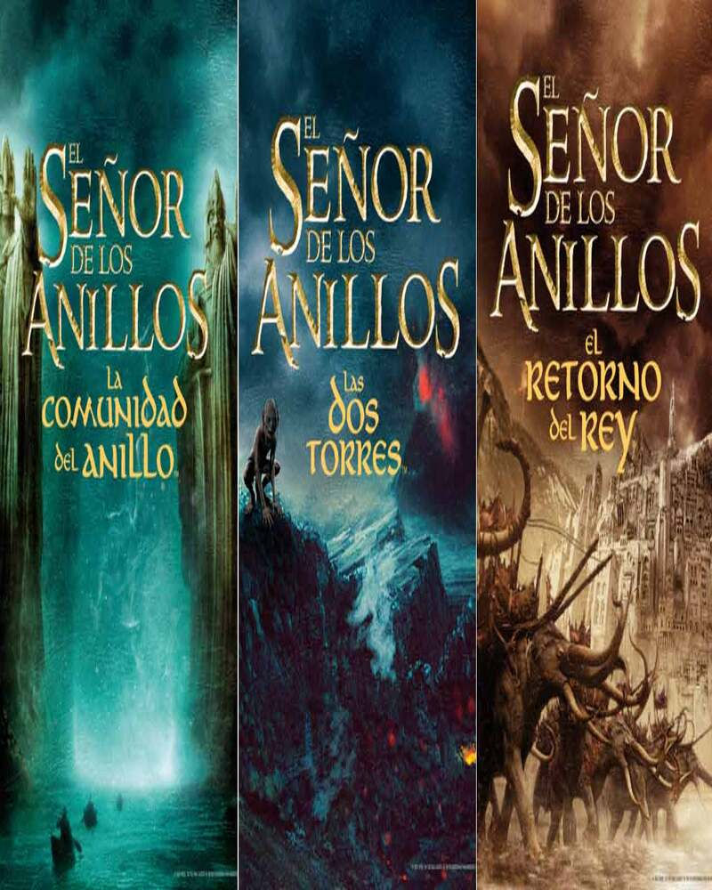
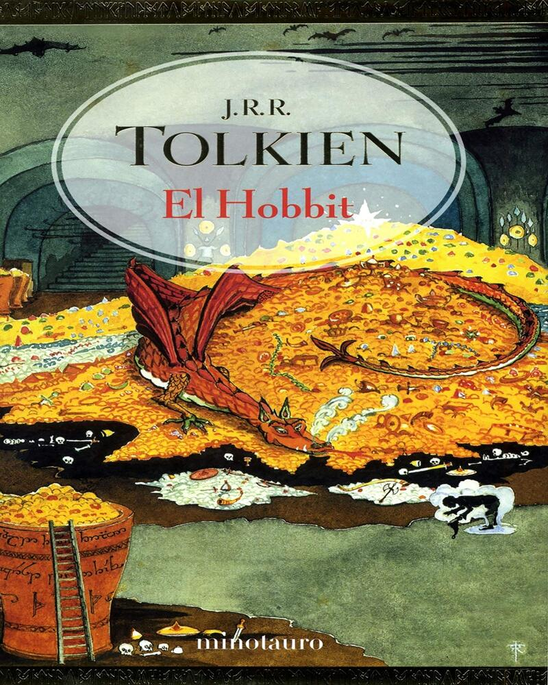
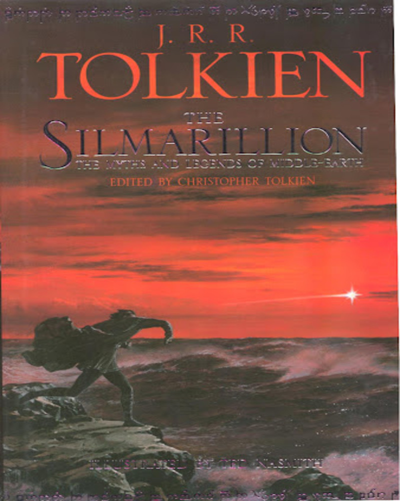
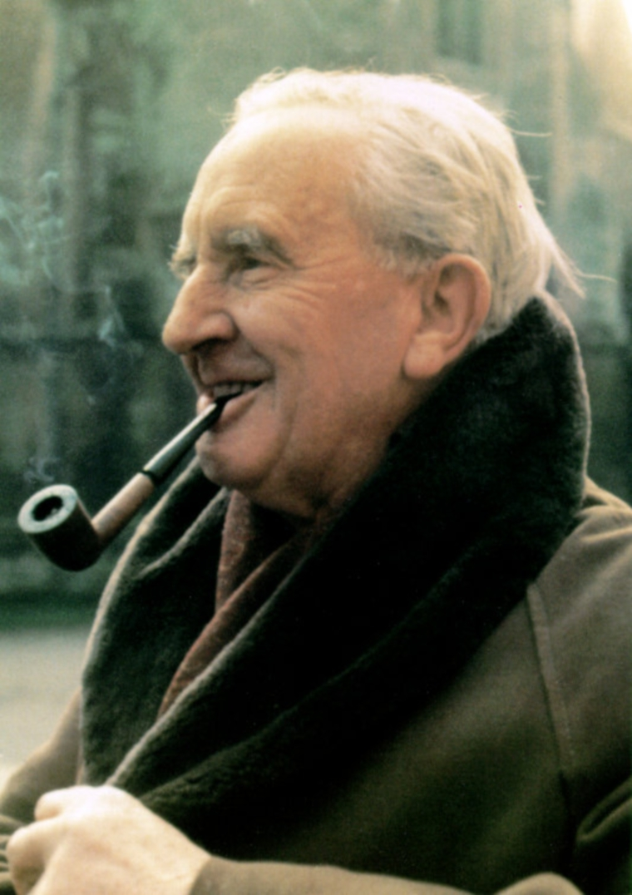
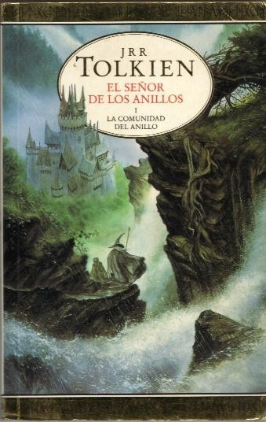
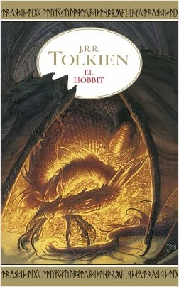
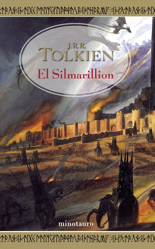
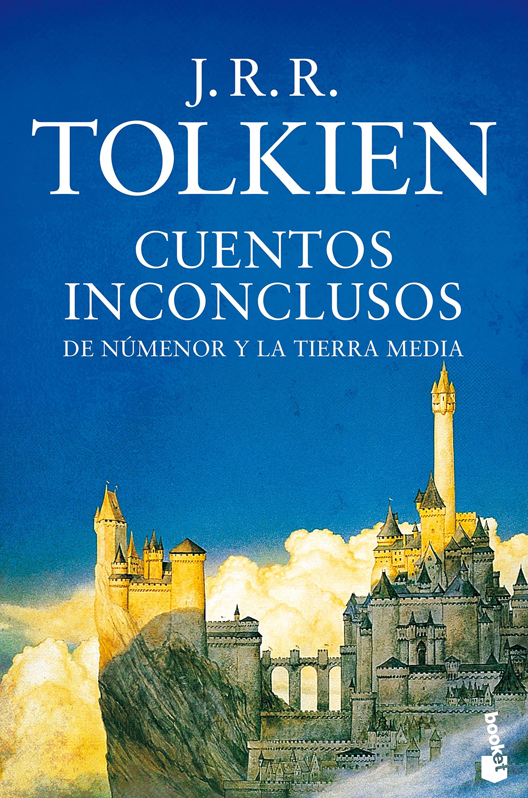
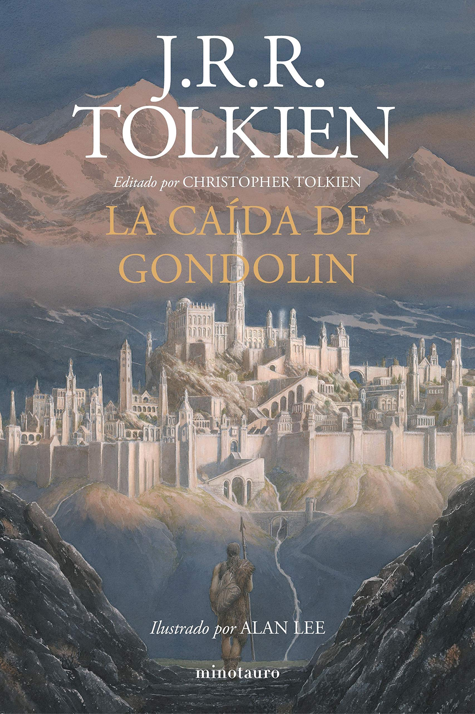
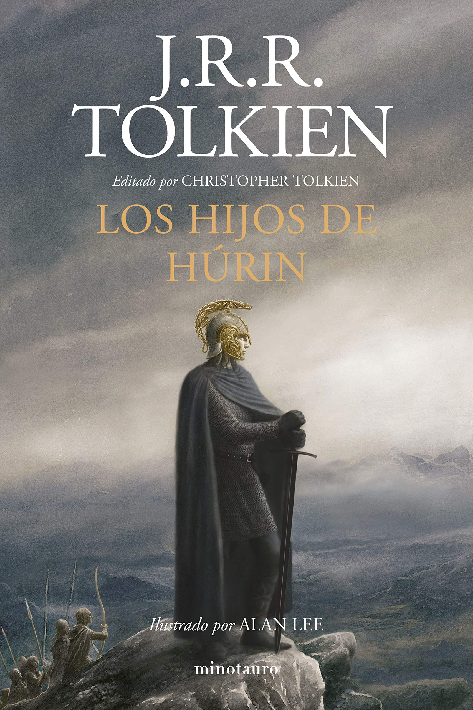

Biografia de J.R.R Tolkien
John Ronald Reuel Tolkien nácido en Bloemfontein, hoy Sudáfrica; 3 de enero de 1892-Bournemouth,
a
menudo citado como J. R. R. Tolkien o JRRT, fue un escritor,
poeta, filólogo, lingüista y profesor universitario británico, conocido principalmente por ser
el
autor de las novelas clásicas de fantasía heroica El hobbit,
El Silmarillion y El Señor de los Anillos. De 1925 a 1945, Tolkien ocupó la cátedra Rawlinson y
Bosworth en la Universidad de Oxford, enseñando anglosajón y,
de 1945 a 1959, fue profesor de Lengua y Literatura inglesa en Merton. Era amigo cercano del
también
escritor C. S. Lewis y ambos eran miembros de un informal
grupo de debate literario conocido como los Inklings. Tolkien fue nombrado Comendador de la
Orden
del Imperio Británico por la reina Isabel II el 28 de marzo de 1972.

Libros del autor

El señor de los anillos
El Señor de los Anillos es una novela de fantasía épica escrita por el filólogo y
escritor británico J. R. R. Tolkien. Su historia se desarrolla en la
Tercera Edad del Sol de la Tierra Media, un lugar ficticio poblado por hombres y otras
razas antropomorfas como los hobbits, los elfos o los enanos,
así como por muchas otras criaturas reales y fantásticas. La novela narra el viaje del
protagonista principal, Frodo Bolsón, hobbit de la Comarca, para
destruir el Anillo Único y la consiguiente guerra que provocará el enemigo para
recuperarlo, ya que es la principal fuente de poder de su creador,
el Señor oscuro, Sauron.

El hobbit
El hobbit (título original en inglés: The Hobbit, or There and Back Again, usualmente
abreviado como The Hobbit) es una novela fantástica del filólogo y
escritor británico J. R. R. Tolkien. Fue escrita por partes desde finales de los años
1920 hasta principios de los años 1930 y, en un principio, tan solo
tenía el objetivo de divertir a los hijos pequeños de Tolkien.1 No obstante, el
escritor prestó a varias personas el manuscrito de la obra aún inacabada,
que terminó en manos de la editorial George Allen & Unwin. Dispuestos a publicarla, los
editores pidieron a Tolkien que finalizara la obra y El hobbit fue
publicada el 21 de septiembre de 1937 en el Reino Unido.

El Silmarillion
El Silmarillion es una recopilación de obras de J. R. R. Tolkien, editada y publicada
póstumamente por su hijo Christopher Tolkien, en 1977.
En ella, se narra, entre otras cosas, la creación de Eä y el nacimiento de las razas más
importantes (Valar, Maiar, elfos, hombres y enanos) de la Tierra Media.
La mayor porción de El Silmarillion, titulada «Quenta Silmarillion» trata sobre los
Silmaril, joyas hechas por Fëanor en Aman y alrededor de las
cuales se entreteje la historia de la Primera Edad del Sol en la Tierra Media,
principalmente en la región conocida como Beleriand.
También se incluyen otras historias más breves: «Ainulindalë», «Valaquenta» y
«Akallabêth».
Una última historia («De los Anillos de Poder y la Tercera Edad»)
sirve como marco de referencia histórico para El hobbit y El Señor de los Anillos, las
más
conocidas novelas de Tolkien.

Cuentos inconclusos de Númenor y la Tierra Media
Los Cuentos inconclusos de Númenor y la Tierra Media (también conocidos simplemente como
Cuentos inconclusos) es una colección de historias escritas por
J. R. R. Tolkien que nunca fueron completadas en vida del escritor, pero fueron editadas
por
su hijo Christopher Tolkien y publicadas en 1980.
Al contrario que en El Silmarillion, en el cual se modificaron los fragmentos de la
narrativa para conectarlos y crear una obra consistente y coherente,
los Cuentos inconclusos se presentan como Tolkien los concibió, con el ligero cambio de
algunos nombres (el autor tenía el hábito de inventar distintos
nombres para un personaje mientras escribía sus borradores). De esta manera, algunas de
estas historias están incompletas, mientras que otras son colecciones
puramente informativas acerca de la Tierra Media. Cada cuento está acompañado de una
larga
serie de notas aclarando puntos inconsistentes y oscuros.

La caída de Gondolin
«La caída de Gondolin» es un relato del escritor británico J. R. R. Tolkien, publicado
de
forma póstuma por su tercer hijo y principal editor,
Christopher Tolkien, en el segundo volumen de La historia de la Tierra Media: El libro
de
los cuentos perdidos 2. Narra la destrucción del reino ficticio
de Gondolin a manos de los ejércitos del vala oscuro Morgoth y finaliza con la llegada
de
los supervivientes a la desembocadura del río Sirion,
donde establecen su nuevo asentamiento.
J. R. R. Tolkien escribió la primera versión de «La caída de Gondolin» en 1917, cuando
se
encontraba de baja en Great Haywood a causa de una enfermedad
contraída durante su servicio en la Primera Guerra Mundial.

Los hijos de Húrin
Los hijos de Húrin (título original en inglés: The Children of Húrin) es una novela del
escritor y filólogo británico J. R. R. Tolkien,
publicada de forma póstuma el 17 de abril de 2007 en todo el mundo,1 tras ser editada
por
su hijo Christopher.
La novela está ambientada en la Primera Edad del Sol de la Tierra Media, el lugar
ficticio
donde se desarrolla la mayor parte del legendarium creado por Tolkien,
poblado por hombres y otras razas humanoides (elfos y enanos), así como muchas otras
criaturas reales y fantásticas.
La historia trata sobre un hombre llamado Húrin, perteneciente a la Casa de Hador de
raza de
los edain, y sobre la maldición que el vala Morgoth echa sobre él y
sus descendientes. Dentro de la estructura del legendarium, la historia es conocida en
idioma sindarin como Narn i Chîn Húrin, «Historia de los hijos de Húrin»;
se la menciona varias veces simplemente como el Narn. La balada original se describe
como
escrita en el año 499 de la Primera Edad del Sol por Dírhaval,
un poeta mortal nacido en Dor-lómin, pero refugiado en las bocas del Sirion.
Recibe nuestras novedades en libros en tu email.


Descuentos en libros, últimos títulos publicados y mucho más...